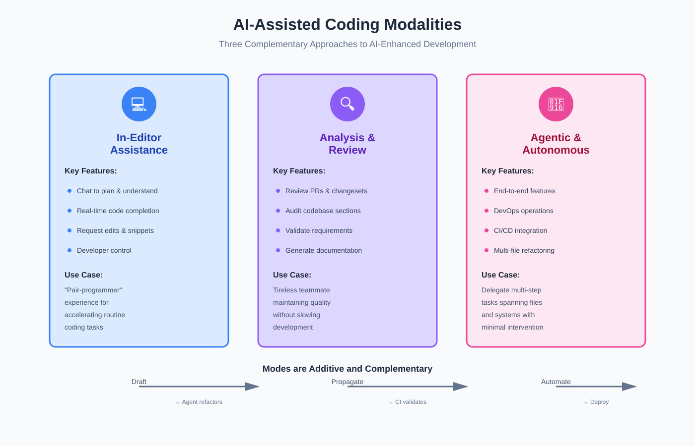
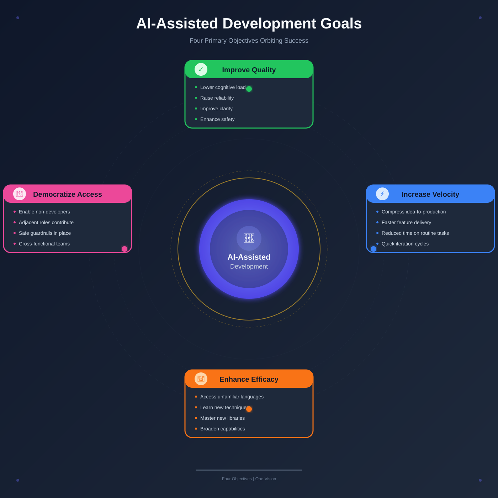
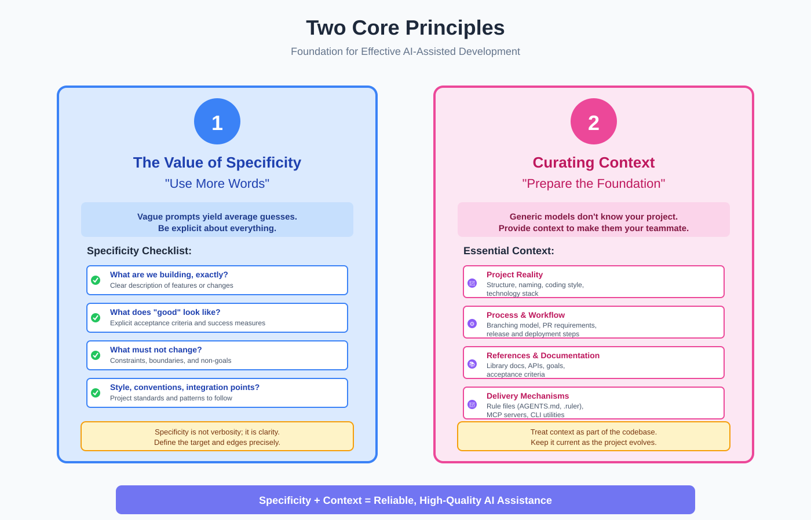
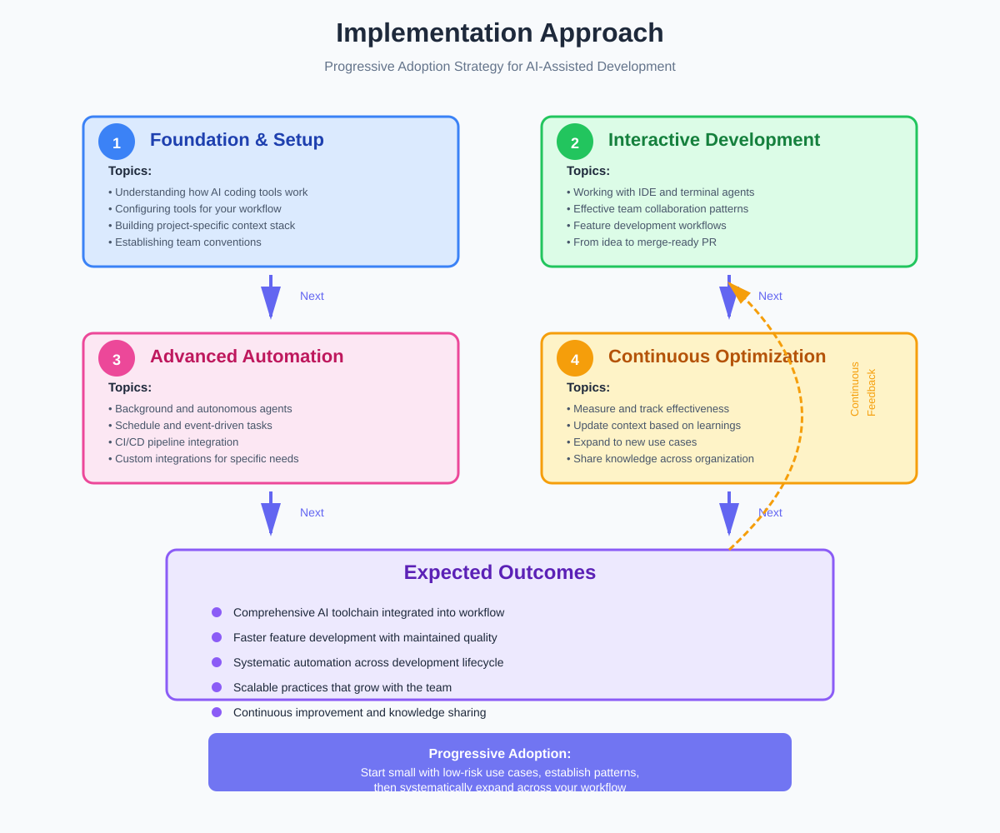
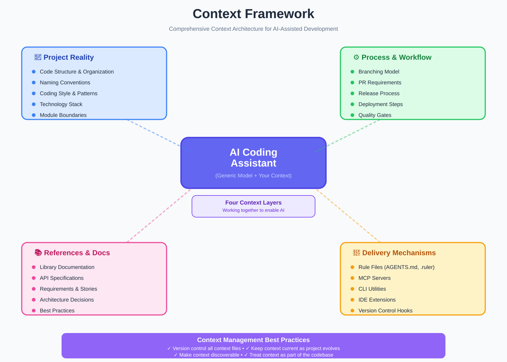

Elite AI-Assisted Coding: Orientation & Introduction
📋 Quick Navigation
- Overview
- The Promise
- AI-Assisted Modalities
- Development Goals
- Core Principles
- Course Structure
- What This Course Is NOT
- How To Learn Here
- Tools & Resources
- References & Further Reading
🎯 Overview
AI is now part of everyday software work. This comprehensive guide introduces AI-assisted coding: what it means, why it matters, how to use it effectively, and the foundational principles that make these tools dependable and powerful.
Course Information:
- Cohort: Elite AI Assisted Coding — Cohort 1
- Date: October 2025
- Instructors: Eleanor Berger & Isaac Flath
- Focus: Practical, vendor-agnostic AI-assisted development across the entire software lifecycle
Key Takeaway:
AI-assisted development augments engineers rather than replacing them. The fundamentals still govern outcomes: good design, clean code, robust tests, and sound architecture.

🚀 The Promise
AI-assisted development is about raising the bar while shortening the path from idea to release. Used well, it helps you produce more reliable, more sophisticated software, and it lightens the cognitive load that slows engineering down.
Three Core Benefits:
-
Improve Software Quality: More reliable and dependable systems with fewer defects and clearer intent
-
Enhance Capabilities and Velocity: Developers ship features, fix bugs, and evolve systems faster
-
Democratize Software Development: Adjacent roles and motivated hobbyists can contribute meaningfully when guardrails are in place
Reinforcing Effects:
These benefits reinforce one another in powerful ways:
-
Better quality reduces rework, which increases velocity
-
Clearer conventions and context make it safer for more people to contribute
-
Faster feedback loops enable higher quality outcomes
The Goal:
A development process that is both faster and more dependable, maintaining high standards while accelerating delivery.
🔧 AI-Assisted Modalities
There isn't a single workflow. You'll move between complementary modalities, often within the same task. The shape of the task dictates the mode; you can switch as you go without losing momentum.
In-Editor Assistance
AI meets you in the IDE. This is the familiar "pair-programmer" experience where you steer and the tool accelerates routine steps.
Capabilities:
-
Chat to plan or understand code: Ask questions and get explanations within your IDE
-
Accept code completion in real time: Get intelligent suggestions as you type
-
Request edits or generated snippets: Generate boilerplate and routine code
-
Remain in control: You decide what to accept, modify, or reject
Analysis & Review
AI acts like a tireless teammate that never gets fatigued or overlooks details.
Use Cases:
-
Review pull requests and change sets: Get automated code review feedback
-
Audit parts of the codebase: Identify issues, patterns, and improvement opportunities
-
Compare work to requirements: Ensure implementation matches specifications
-
Turn ideas and data into specifications and plans: Transform rough concepts into structured documentation
Value Proposition:
When complexity or volume climbs, this mode keeps quality high without slowing you down.
Agentic & Autonomous Systems
You delegate multi-step tasks that span files and systems. It's the same engineering you already do, expressed as repeatable tasks that an agent can carry.
Applications:
-
Agentic coding for end-to-end feature work: Complete feature implementation from specification
-
AI as a DevOps operator: Handle source control, deployments, and monitoring
-
Continuous AI inside CI/CD: Scheduled or event-driven jobs that run without constant human intervention
Integration Pattern:
These modes are additive. You might draft a change with in-editor help, ask an agent to propagate a refactor, and rely on CI to run policy checks and update documentation. The handoff between modes is where much of the time saving occurs.
🎯 Development Goals
The course prioritizes outcomes that matter across a project's lifecycle—planning and specification through implementation, testing, integration, and deployment—without tying you to a single vendor or tool.

Four Primary Goals:
-
Improve Software Quality: Lower cognitive load and raise reliability, clarity, and safety
-
Increase Development Velocity: Compress the loop from idea to feature in production, not only the pace of typing
-
Enhance Developer Efficacy: Make unfamiliar languages, techniques, libraries, and tools accessible
-
Democratize Participation: Enable non-developers or adjacent roles to contribute directly and safely
Success Indicators:
When your practice aligns with these aims, the benefits of AI assistance show up in day-to-day work:
-
Clearer code that's easier to understand
-
Faster reviews with fewer back-and-forth cycles
-
Fewer handoffs between team members
-
A codebase that is easier to change and evolve
The Yardstick:
Keep these aims in mind when you choose a tool or a mode; they're the yardsticks for success.
💡 Core Principles
These are the through-lines for the entire course. You'll see them applied in every exercise and demo; they are simple to state and powerful in practice.

Principle 1: The Value of Specificity — "Use More Words"
Vague prompts yield average guesses. Models rarely say "insufficient instruction"; they just produce something plausible. Be explicit about intent, constraints, acceptance criteria, style, and boundaries.
Key Insight:
Assume anything you don't state will be guessed by the model.
Specificity Checklist:
When briefing an AI assistant or agent, always address:
-
What are we building, exactly? Clear description of the feature or change
-
What does "good" look like? Explicit acceptance criteria and success measures
-
What must not change? Constraints, boundaries, and non-goals
-
Style, conventions, and integration points to follow? Project standards and patterns
Important Distinction:
Specificity is not verbosity; it is clarity. The more precisely you define the target and the edges, the more consistently the outputs match your intent.
Principle 2: Curating and Preparing Context
Generic models don't know your project. Provide the context that makes them behave like your teammate who understands the codebase, conventions, and goals.
Essential Context Categories:
- Project Reality:
- Code structure and organization
- Naming conventions
-
Coding style and patterns
-
Process:
- Branching model (e.g., Git Flow, trunk-based)
- Pull request requirements
-
Release and deployment steps
-
References:
- Library and framework documentation
- APIs you use and their specifications
-
Goals and acceptance criteria for features
-
Mechanisms:
- Rule files and living docs under version control (e.g.,
AGENTS.md,.ruler) - Specialized tools like MCP servers
- CLI utilities that inject contextual information
Best Practice:
Treat context as part of the codebase. Clear prompts plus rich, project-specific context produce dependable results. As the project evolves, keep this context up to date; it's the backbone that allows agents to act safely and predictably.
📚 Course Structure
The course looks across the entire software lifecycle—planning and specification through implementation, testing, integration, and deployment—without tying you to a single vendor or tool. The focus is practical skills for individuals and for teams.

Week 1: Foundation & Personalization
Topics:
-
How these tools work under the hood
-
How to configure them for your workflow
-
How to build a context stack that fits your project
Outcomes:
Understanding of AI-assisted development fundamentals and initial setup of your personal toolchain.
Week 2: Interactive Development & Collaboration
Topics:
-
Working with IDE and terminal agents
-
Collaborating effectively in teams
-
Taking a feature from idea to a merge-ready PR
Outcomes:
Hands-on experience with interactive development workflows and team collaboration patterns.
Week 3: Async Agents, CI/CD & Advanced Techniques
Topics:
-
Background agents and autonomous systems
-
Schedule- and event-driven tasks
-
Ways to embed AI into delivery pipelines
Outcomes:
Advanced automation and integration of AI throughout your development and deployment processes.
Learning Approach:
Each week builds on the last so you can apply ideas immediately. Read the handout before the live session if you can; it will make the demos easier to follow. After the session, return to it while you implement the exercises so the steps are fresh in mind.
🚫 What This Course Is NOT
Setting expectations helps ensure you get maximum value from the course.
This Course Is NOT:
-
"Vibe Coding": The techniques aim for precise, dependable outcomes, not trial-and-error approaches
-
About Replacing Developers: The goal is to augment capability and raise standards, not eliminate the human element
-
A General AI Survey: We focus specifically on practical coding applications, not broad AI theory
-
A Complete Compendium of Software Best Practice: We revisit only the concepts needed to use AI effectively in engineering
The Focus:
This framing keeps the course focused on what improves your day-to-day work: disciplined practice that reliably produces better software.
The Reality:
AI-assisted development is not separate from software engineering; it's a way to apply established practice more effectively.
📖 How To Learn Here
You'll get the most value by engaging actively and keeping feedback loops short. Bring your own code and your own constraints into the conversation; that's where the techniques pay off.
Ask Questions
During Sessions:
There's a Q&A session each week; bring anything from your context.
Asynchronously:
Use the community space (Discord / course forum) to ask asynchronously and compare notes.
Don't Hold Back:
Questions that feel basic often surface assumptions everyone shares.
Do the Homework
Structure:
Each part includes core exercises and stretch goals.
Approach:
-
Attempt them independently first
-
Attend weekly live practice session for complete solutions
-
Compare your approaches with demonstrated solutions
Purpose:
Treat this as rehearsal for how you'll use the tools on your own projects.
Use the Materials
Available Resources:
-
Permanent access to recordings
-
Slides and handouts
-
Deep-dive links via Maven
Best Practice:
Keep the handout open while you work; refer to it when shaping prompts or deciding which modality to use.
Sharing
Course Materials:
Please keep course materials within the cohort.
Your Learning:
Share what you've learned on blogs or social media; let us know so we can help amplify.
Why Share:
Public reflection is a good way to consolidate your own understanding.
🛠️ Tools & Resources
The course is tool-agnostic. Use what you already have, or any equivalents. Tool choice matters less than how you brief and review the work; that's where quality comes from.
IDE with AI Capabilities
Visual Studio Code Extensions:
-
GitHub Copilot
-
Cline
-
Amp
-
Amazon Q Developer
-
Gemini Code Assist
-
OpenAI Codex Extension
Standalone IDEs:
-
Cursor
-
Windsurf
-
Zed
-
JetBrains + Junie
Terminal/CLI Coding Agents
Available Options:
-
Claude Code
-
Codex CLI
-
Gemini CLI
-
Amp CLI
-
OpenCode
-
GitHub Copilot CLI
-
Warp
-
Cursor CLI
Background (Cloud-Hosted) Async Agents
Autonomous Systems:
-
OpenAI Codex
-
GitHub Copilot Coding Agent
-
OpenHands
-
Jules
-
Devin
Alternative Approach:
If you don't have a background agent, you can still follow along by running tasks non-interactively in a terminal agent. Review the results like a PR; the workflow is effectively the same.
Models
Current Generation:
-
Claude 4.5
-
GPT-5
-
Gemini 2.5
-
GLM 4.5
-
Qwen 3 Coder
Accessibility:
Many options include free tiers; some sponsors provide credits you can use for course work.

📚 References & Further Reading
Course Materials
-
Student Portal on Maven: Schedule, calendar links, session recordings, slides, and reflection prompts
-
Elite AI-Assisted Blog / Newsletter on Substack: Tips, FAQs, guides, talks, and tool reviews
Specificity Resources
-
Refine your initial prompt instead of course-correcting: Best practices for prompt engineering
-
What is "Vibe Coding" and when should I use it?: Understanding different development approaches
-
The Narrowing Path: Techniques for progressive prompt refinement
Context Engineering
-
Your AI Is Only as Good as Your Context: Foundation principles for context curation
-
Context Engineering: A Primer: Comprehensive guide to building effective context
Tooling Guides
-
Our Tool Reviews: Comprehensive reviews of AI-assisted coding tools
-
Does the choice of coding agent significantly affect the cost of AI coding tasks?: Cost comparison analysis
-
What are the key differences between IDE-focused tools and CLI-based agents?: Understanding tool categories and use cases
-
How do subscription plans for AI tools compare to "bring your own key" (BYOK) models?: Pricing model comparison
Key Takeaways
Remember Only Two Things:
If you remember only two things from Lesson 1, keep these:
-
Be specific: Clear, detailed prompts yield consistent, high-quality results
-
Curate context: Rich, project-specific context enables AI to act as a knowledgeable teammate
Application:
With these in place, the modalities—assistant, reviewer, agent, operator—become reliable parts of your day-to-day work.
© Eleanor Berger & Isaac Flath — October 2025